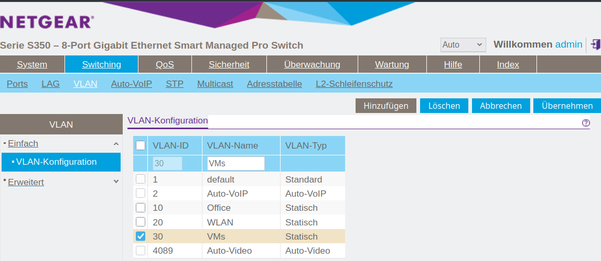

IPv6-Präfix-Delegation für Virtual Machine Manager

Einführung
Nachdem ich IPv6 Präfix-Delegation (PD) auf meinem Linux-Router eingerichtet habe, wurde mir klar, dass ich immer noch ein IPv6-Subnetz für die virtuellen Maschinen (VMs) benötige, die ich auf meinem Desktop-PC betreibe.
Damit eine VM eine Adresse aus einem delegierten Präfix erhält, benötige ich eine Bridge-Schnittstelle mit einem verbundenen VLAN und eine Möglichkeit, den Präfix an dieses Segment zu übertragen. In dieser Anleitung verwende ich systemd-networkd. Alternativen wie NetworkManager oder netplan können ähnlich verwendet werden, aber der Fokus liegt hier auf deklarativen .network- und .netdev-Units.
Ich möchte auch, dass das VLAN auf meinem physischen Switch konfiguriert wird, wobei die Adressen auf meinem Router zugewiesen werden. Mein Host-Computer funktioniert in diesem Szenario als Bridge, nicht als NAT-Gateway oder Router. Auf diese Weise haben die VMs keinen Zugriff auf mein Office VLAN, was mir zusätzliche Sicherheit bietet. Das ist besonders wichtig für mich, da eine der VMs eine Windows 11-Maschine ist, die ich als unsicher betrachte.
Am Ende soll mein Netzwerk so aussehen:

Hostnetzwerk konfigurieren
Zuerst konfiguriere ich die physische Ethernet-Schnittstelle in /etc/systemd/network/10-eth0.network. Ich ordne das Gerät über die MACAddress zu, anstatt über den Namen, was Probleme mit der Namensgebung nach Neustarts oder BIOS-Updates vermeidet.
Erklärung der wichtigsten Optionen:
DHCP=yes: aktiviert sowohl IPv4- als auch IPv6-DHCP.IPv6AcceptRA=yes: erlaubt der Schnittstelle, Router-Advertisements (RAs) zu empfangen.IPv6SendRA=yes: ermöglicht es dem System,RAsan untergeordnete Schnittstellen weiterzuleiten.IPv4Forwarding=undIPv6Forwarding=: aktivieren die Paketweiterleitung.VLAN=: bindet benannte VLAN-Schnittstellen an dieses physische Gerät.
[Match] MACAddress=d8:bb:c1:8b:b9:d1 Type=ether [Network] Description=Physical Ethernet Port DHCP=yes IPv6AcceptRA=yes IPv6SendRA=yes
Zur Sicherheit aktiviere ich auch die Weiterleitung:
IPv4Forwarding=yes IPv6Forwarding=yes
Das ist auch der richtige Ort, um die VLANs einzubinden, die mit diesem Gerät verbunden sind — in diesem Fall:
Officefür den Host undVMfür die virtuellen Maschinen.
VLAN=Office VLAN=VM
VLAN 10: Host-Netzwerk
Ich möchte das Office VLAN für meinen Host verwenden, da es mein Office-PC ist, in /etc/systemd/network/00-vlan10.netdev. Um es zu verwenden, muss ich zuerst ein virtuelles Netzwerk vom Typ (Kind) vlan definieren. Im [VLAN]-Abschnitt muss ich die VLAN Id angeben.
[NetDev] Name=Office Kind=vlan [VLAN] Id=10
Als nächstes muss ich es in /etc/systemd/network/20-vlan10.network konfigurieren. Für die Adressierung verwende ich wieder DHCP und RA für IPv6:
[Match] Name=Office Type=vlan [Network] Description=Office VLAN interface DHCP=yes IPv6AcceptRA=yes
Das wird das Gerät sein, mit dem ich mich tatsächlich auf meinem Host verbinde.
VLAN 30: Bridge für VMs
Als nächstes benötige ich eine VLAN-Schnittstelle für die virtuellen Maschinen:
[NetDev] Name=VM Kind=vlan [VLAN] Id=30
Bridge-Gerät (br30)
Und ich benötige ein Bridge-Gerät, mit dem sich die VMs verbinden können.
[NetDev] Name=br30 Kind=bridge
VLAN 30 an die Bridge anhängen
Jetzt muss ich das Bridge-Gerät mit der virtuellen VLAN-Schnittstelle verbinden, die ich VM genannt habe. Dafür verwende ich die folgenden Optionen in /etc/systemd/network/20-vlan3.network.:
Bridge=br30verbindet diese VLAN-Schnittstelle mit der Bridge.IPv6AcceptRA=yesermöglicht es, dass RA akzeptiert und an VMs weitergeleitet wird.LinkLocalAddressing=ipv6stellt sicher, dass IPv6-Link-Local-Adressen erzeugt werden.
[Match] Name=VM Type=vlan [Network] Description=VM VLAN interface Bridge=br30 IPv6AcceptRA=yes LinkLocalAddressing=ipv6
Bridge-Schnittstellen-Konfiguration
Die Bridge selbst sollte transparent sein und nicht routen oder RA verwalten:
IPv6AcceptRA=noverhindert, dass sich die Bridge selbst konfiguriert.IPv6SendRA=noverhindert, dass die Bridge Router-Ankündigungen ausgibt.LinkLocalAddressing=kernellässt den Kernel eine Link-Local-Adresse zuweisen.
[Match] Name=br30 [Network] BridgeForwardDelaySec=0 IPv6AcceptRA=no IPv6SendRA=no LinkLocalAddressing=kernel
Konfiguration der virtuellen Maschine
Verbinden Sie Ihre VM-Schnittstellen mit br30 über `virt-manager` oder XML:
<interface type='bridge'> <source bridge='br30'/> <model type='virtio'/> </interface>
![Screenshot der Netzwerkschnittstellen-Einstellungen einer virtuellen Maschine aus der Virt-Manager-GUI. Links zeigt ein vertikales Navigationsmenü verschiedene Konfigurationsabschnitte einschließlich "Übersicht", "OS-Informationen", "CPUs", "Speicher", "NIC :e7:4c:6a" (aktuell ausgewählt) und andere. Rechts ist der Details-Tab für die virtuelle Netzwerkschnittstelle geöffnet: Tab: "Details" (aktiv, neben "XML"); Netzwerkquelle: "Bridge-Gerät..."; Gerätename: br20; Gerätemodell: virtio (Dropdown angezeigt); MAC-Adresse: 52:54:00:e7:4c:6a; IP-Adresse: "Unbekannt"; Link-Status: aktiv (Checkbox markiert).](img/VirtManagerBridge.png)
VLAN 30 auf dem Router konfigurieren
Auf meinem Raspberry Pi-Router muss ich jetzt das neue VLAN 30 für die VMs konfigurieren. Zuerst muss ich dort /etc/systemd/network/00-vlan30.netdev konfigurieren:
[NetDev] Name=VMs Kind=vlan [VLAN] Id=30
Als nächstes kommt /etc/systemd/network/20-vlan30.network:
[Match] Name=VMs Type=vlan
Im [Network]-Abschnitt benötigen wir die folgenden Optionen:
- DHCP=ipv6
- Aktiviert den DHCPv6-Client auf dieser Schnittstelle.
- IPv6SendRA=yes
- Das System sendet Router-Ankündigungen (RA) auf dieser Schnittstelle.
- IPv6AcceptRA=yes
- Das System akzeptiert eingehende Router-Ankündigungen.
- DHCPPrefixDelegation=yes
- Ermöglicht es der Schnittstelle, einen delegierten Präfix über DHCPv6 anzufordern.
[Network] Description=VMs VLAN interface DHCP=ipv6 IPv6SendRA=yes IPv6AcceptRA=yes DHCPPrefixDelegation=yes
Für das Legacy-IPv4 verwenden wir einfach eine statische Adresse.
[Address] Address=172.16.30.1/24
- Token=::1
- Gibt das Interface-Identifier (IID)-Suffix an, das bei der Konstruktion der delegierten Adresse oder des Präfixes verwendet werden soll. Dieser Wert wird an den delegierten Präfix angehängt, um die vollständige IPv6-Adresse zu bilden. Zum Beispiel würde mit einem delegierten Präfix `2001:db8:1234:567c:/62` und `Token=::1` die resultierende Adresse `2001:db8:1234:567c:1` lauten.
- SubnetId=0x2
- Gibt eine hexadezimale Subnetz-ID an, die verwendet wird, um ein spezifisches /64-Subnetz aus dem delegierten Präfix auszuwählen. Zum Beispiel würde bei einem delegierten /62 die Einstellung `SubnetId=0x2` das dritte Netzwerk `2001:db8:1234:567e::/64` der Schnittstelle zuweisen.
- Assign=yes
- Gibt an, dass das ausgewählte Subnetz (über `SubnetId`) automatisch der Schnittstelle zugewiesen werden soll.
- Announce=yes
- Ermöglicht es dem System, den zugewiesenen Präfix über Router-Ankündigungen (RA) zu verkünden und ihn für andere Geräte im Link verfügbar zu machen.
[DHCPPrefixDelegation] Token=::1 SubnetId=0x2 Assign=yes Announce=yes
Schließlich muss ich meinen Legacy-DHCP-Pool für das VMs VLAN in /etc/dnsmasq.d/00-vlans.conf einrichten:
- interface=VMs
- Bindet `dnsmasq` an die Netzwerkschnittstelle namens `VMs`. Es wird auf dieser Schnittstelle lauschen und DHCP bereitstellen.
- dhcp-range=set:vlan30,172.16.30.10,172.16.30.200,255.255.255.0,24h
- Definiert einen DHCP-Adresspool für Clients, die mit `vlan30` getaggt sind. Der Bereich reicht von `172.16.30.10` bis `172.16.30.200`, mit einer Subnetzmaske von `255.255.255.0` und einer Lease-Dauer von 24 Stunden.
- dhcp-option=tag:vlan30,option:router,192.168.178.254
- Gibt das Standard-Gateway (Router) für DHCP-Clients an, die mit `vlan30` getaggt sind. Clients erhalten `192.168.178.254` als ihre Standardroute, was die
WAN-Schnittstellen-IPmeines Pi-Routers ist. - dhcp-option=tag:vlan30,option:dns-server,192.168.178.254
- Setzt den DNS-Server für Clients, die mit `vlan30` getaggt sind, auf `192.168.178.254`. Dies wird als Teil des DHCP-Angebots gesendet.
# DHCP für vlan-Schnittstellen interface=WLAN dhcp-range=set:vlan10,172.16.10.10,172.16.10.200,255.255.255.0,24h dhcp-option=tag:vlan10,option:router,192.168.178.254 dhcp-option=tag:vlan10,option:dns-server,192.168.178.254 interface=Office dhcp-range=set:vlan20,172.16.20.10,172.16.20.200,255.255.255.0,24h dhcp-option=tag:vlan20,option:router,192.168.178.254 dhcp-option=tag:vlan20,option:dns-server,192.168.178.254 interface=VMs dhcp-range=set:vlan30,172.16.30.10,172.16.30.200,255.255.255.0,24h dhcp-option=tag:vlan30,option:router,192.168.178.254 dhcp-option=tag:vlan30,option:dns-server,192.168.178.254
VLAN 30 auf dem Switch konfigurieren
Damit die gesamte Einrichtung funktioniert, muss ich auch das VLAN mit der Id 30 auf dem verwalteten Switch erstellen. Wie das gemacht wird, hängt natürlich von Ihrem Switch-Typ ab.

Sie müssen sicherstellen, dass die Schnittstelle, die mit dem Host-PC verbunden ist, als 'tagged' markiert ist und dass die VLAN 10 und 30 mit dem Port verknüpft sind. Sie müssen auch VLAN 30 mit dem Port zum Router verknüpfen.

Wechsel zu systemd-networkd
Auf meinem System lief bisher NetworkManager, den ich jetzt durch systemd-networkd ersetzen möchte, was ohnehin die bessere Wahl auf einem Desktop ohne WLAN ist. Das ist einfach zu bewerkstelligen, indem man folgendes ausführt:
sudo systemctl disable --now NetworkManager sydo systemctl enable --now systemd-networkd
Nur zur Überprüfung, dass keine Probleme aufgetreten sind:
systemctl status systemd-networkd
Die Ausgabe sollte etwa so aussehen:
● systemd-networkd.service - Network Configuration
Loaded: loaded (/usr/lib/systemd/system/systemd-networkd.service; enabled; preset: disabled)
Active: active (running) since Thu 2025-07-31 07:45:37 CEST; 2 days ago
Invocation: 8fc13f7bd3854763a86c1eb8900269a7
TriggeredBy: ● systemd-networkd.socket
Docs: man:systemd-networkd.service(8)
man:org.freedesktop.network1(5)
Main PID: 1521 (systemd-network)
Status: "Processing requests..."
Tasks: 1 (limit: 19023)
FD Store: 0 (limit: 512)
CPU: 3.775s
CGroup: /system.slice/systemd-networkd.service
└─1521 /usr/lib/systemd/systemd-networkd
Warning: some journal files were not opened due to insufficient permissions.
Und ich überprüfe auch, dass alle Geräte aktiv und konfiguriert sind:
ip --brief a
Nur die Office Schnittstelle sollte eine Globale Unicast IPv6-Adresse (GUA) erhalten.
lo UNKNOWN 127.0.0.1/8 ::1/128 enp0s16f0u1 UP 172.16.10.154/24 metric 1024 fe80::dabb:c1ff:fe8b:b9d1/64 br20 UP fe80::84d9:45ff:fe20:bb32/64 Office@enp0s16f0u1 UP 172.16.10.155/24 metric 1024 3fff:abc:def:bf0c:dabb:c1ff:fe8b:b9d1/64 fe80::dabb:c1ff:fe8b:b9d1/64 VM@enp0s16f0u1 UP fe80::dabb:c1ff:fe8b:b9d1/64
Filterung für das Bridge-Gerät deaktivieren
Bis zu diesem Punkt funktioniert alles sehr unkompliziert. Aber als ich versuchte, mich mit dem Netzwerk zu verbinden, bekam ich keine Adresse. Es hat mich ziemlich viel Zeit gekostet, das Problem zu finden und zu lösen.
Das Problem ist, dass das Standardverhalten unter Linux darin besteht, dass einige Pakete sowohl auf Layer 3 als auch auf Layer 2 gefiltert werden. Da wir den Host als reine Bridge zu den virtuellen Maschinen verwenden, ist das nicht erwünscht. Also müssen wir dieses Verhalten für Bridge-Geräte deaktivieren:
/etc/sysctl.d/bridge.conf
net.bridge.bridge-nf-call-ip6tables=0 net.bridge.bridge-nf-call-iptables=0 net.bridge.bridge-nf-call-arptables=0
Das würde jedoch nur nach einem Systemneustart wirksam werden, außer Sie lesen die Datei mit sysctl:
sudo sysctl -f /etc/sysctl.d/99-bridge.conf
Fazit
Wenn Sie die zu setzenden Optionen kennen, ist es sehr einfach, ein dediziertes VLAN von Ihrem Router direkt zu Ihren VMs einzurichten. Es gibt natürlich noch zwei weitere Dinge zu beachten:
- Sie können
Wifi-Schnittstellen nicht einfach mit einer Bridge überbrücken. - Ihre
VMsbefinden sich in einem separaten Subnetz, sodass Sie nicht einfach persshauf sie zugreifen können. Es gibt mehrere mögliche Lösungen dafür:
Host Win Windows Window11 Windoof win
HostName fe80::d8b8:3a7:126b:162b%%VMs
User Username
IdentityFile ~/.ssh/win
ProxyJump pi
Host *
IdentitiesOnly yes
- Host Win Windows Window11 Windoof win
- Definiert eine Gruppe von Host-Aliasen. Sie können jeden dieser Namen (`Win`, `Windows`, etc.) mit `ssh` verwenden, und die unten stehenden Einstellungen werden angewendet.
- HostName fe80::d8b8:3a7:126b:162b%%VMs
- Gibt den tatsächlichen Ziel-Host an. In diesem Fall ist es eine Link-Local-IPv6-Adresse mit dem Zonen-Index `%%VMs` (der Schnittstellenname, der für Link-Local-Kommunikation benötigt wird).
- User Username
- Setzt den SSH-Benutzernamen für diesen Host auf `Username`.
- IdentityFile ~/.ssh/win
- Gibt die private SSH-Schlüsseldatei an, die beim Verbinden zu diesem Host verwendet werden soll.
- ProxyJump pi
- Verwendet den Host-Alias `pi` als Jump-Host (SSH-Proxy). SSH wird sich zuerst mit `pi` verbinden und ihn dann verwenden, um die Windows-Maschine zu erreichen.
- Host *
- Ein Platzhalter-Match für alle Hosts, die nicht explizit oben aufgelistet sind.
- IdentitiesOnly yes
- Stellt sicher, dass nur die explizit in der Konfiguration angegebenen Identitätsdateien (z.B. `~/.ssh/win`) für die Authentifizierung verwendet werden, und verhindert, dass SSH andere im Agent geladene Schlüssel ausprobiert.